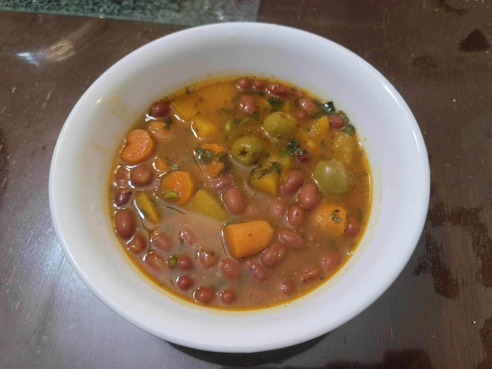

Puerto Rican Habichuelas Guisadas

Ingredients:
- 2 14 oz cans Small red beans or Pink beans, not drained
- 1 tbsp Olive oil
- Optional: 1/4 cup Ham or Bacon, diced
- 1/4 cup Recaito
- 1 1/2 tsp Sazón seasoning
- 1/4 cup Tomato sauce
- 1/2 tsp Dried oregano
- 1/4 tsp Cumin
- 2 Bay leaves
- 2 cups Low sodium chicken broth or Low sodium vegetable broth
- 1/3 cup potatoes, baby carrots, and/or squash, peeled and cubed
- 8 Pimento olives
- 1/4 bunch Cilantro, chopped
- Adobo seasoning, to taste
Instructions:
- In a pot, heat the olive oil over medium heat. If using, add in the ham/bacon and sauté for about 2-3 minutes, or until fully cooked and beginning to caramelize.
- Then add in the recaito and sazón seasoning. Sauté for another 2 minutes, or until fragrant. Add in the tomato sauce, oregano, cumin, and bay leaves. Sauté another minute.
- Stir in the broth, beans, potatoes/carrots/squash, olives, and half of the cilantro. Bring to a boil and then reduce to a simmer. Cover and let cook for 30-40 minutes, stirring occasionally.
- The soup should be creamy and the potatoes should be soft at this point. Taste and add adobo seasoning if needed. Then remove from heat and stir in the rest of the cilantro. Serve over rice.